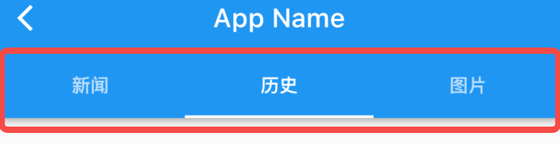

6.9 TabBarView
TabBarView 是 Material 组件库中提供了 Tab 布局组件，通常和 TabBar 配合使用。
6.9.1 TabBarView
TabBarView 封装了 PageView，它的构造方法很简单
TabBarView({
Key? key,
required this.children, // tab 页
this.controller, // TabController
this.physics,
this.dragStartBehavior = DragStartBehavior.start,
})
TabController 用于监听和控制 TabBarView 的页面切换，通常和 TabBar 联动。如果没有指定，则会在组件树中向上查找并使用最近的一个 DefaultTabController 。
6.9.2 TabBar
TabBar 为 TabBarView 的导航标题，如图6-20所示：

TabBar 有很多配置参数，通过这些参数我们可以定义 TabBar 的样式，很多属性都是在配置 indicator 和 label，拿上图来举例，Label 是每个Tab 的文本，indicator 指 “历史” 下面的白色下划线。
const TabBar({
Key? key,
required this.tabs, // 具体的 Tabs，需要我们创建
this.controller,
this.isScrollable = false, // 是否可以滑动
this.padding,
this.indicatorColor,// 指示器颜色，默认是高度为2的一条下划线
this.automaticIndicatorColorAdjustment = true,
this.indicatorWeight = 2.0,// 指示器高度
this.indicatorPadding = EdgeInsets.zero, //指示器padding
this.indicator, // 指示器
this.indicatorSize, // 指示器长度，有两个可选值，一个tab的长度，一个是label长度
this.labelColor,
this.labelStyle,
this.labelPadding,
this.unselectedLabelColor,
this.unselectedLabelStyle,
this.mouseCursor,
this.onTap,
...
})
TabBar 通常位于 AppBar 的底部，它也可以接收一个 TabController ，如果需要和 TabBarView 联动， TabBar 和 TabBarView 使用同一个 TabController 即可，注意，联动时 TabBar 和 TabBarView 的孩子数量需要一致。如果没有指定 controller，则会在组件树中向上查找并使用最近的一个 DefaultTabController 。另外我们需要创建需要的 tab 并通过 tabs 传给 TabBar， tab 可以是任何 Widget，不过Material 组件库中已经实现了一个 Tab 组件，我们一般都会直接使用它：
const Tab({
Key? key,
this.text, //文本
this.icon, // 图标
this.iconMargin = const EdgeInsets.only(bottom: 10.0),
this.height,
this.child, // 自定义 widget
})
注意，text 和 child 是互斥的，不能同时制定。
6.9.3 实例
下面我们看一个例子：
class TabViewRoute1 extends StatefulWidget {
@override
_TabViewRoute1State createState() => _TabViewRoute1State();
}
class _TabViewRoute1State extends State<TabViewRoute1>
with SingleTickerProviderStateMixin {
late TabController _tabController;
List tabs = ["新闻", "历史", "图片"];
@override
void initState() {
super.initState();
_tabController = TabController(length: tabs.length, vsync: this);
}
@override
Widget build(BuildContext context) {
return Scaffold(
appBar: AppBar(
title: Text("App Name"),
bottom: TabBar(
controller: _tabController,
tabs: tabs.map((e) => Tab(text: e)).toList(),
),
),
body: TabBarView( //构建
controller: _tabController,
children: tabs.map((e) {
return KeepAliveWrapper(
child: Container(
alignment: Alignment.center,
child: Text(e, textScaleFactor: 5),
),
);
}).toList(),
),
);
}
@override
void dispose() {
// 释放资源
_tabController.dispose();
super.dispose();
}
}
运行后效果如图6-21所示：
滑动页面时顶部的 Tab 也会跟着动，点击顶部 Tab 时页面也会跟着切换。为了实现 TabBar 和 TabBarView 的联动，我们显式创建了一个 TabController，由于 TabController 又需要一个 TickerProvider （vsync 参数）， 我们又混入了 SingleTickerProviderStateMixin；由于 TabController 中会执行动画，持有一些资源，所以我们在页面销毁时必须得释放资源（dispose）。综上，我们发现创建 TabController 的过程还是比较复杂，实战中，如果需要 TabBar 和 TabBarView 联动，通常会创建一个 DefaultTabController 作为它们共同的父级组件，这样它们在执行时就会从组件树向上查找，都会使用我们指定的这个 DefaultTabController。我们修改后的实现如下：
class TabViewRoute2 extends StatelessWidget {
@override
Widget build(BuildContext context) {
List tabs = ["新闻", "历史", "图片"];
return DefaultTabController(
length: tabs.length,
child: Scaffold(
appBar: AppBar(
title: Text("App Name"),
bottom: TabBar(
tabs: tabs.map((e) => Tab(text: e)).toList(),
),
),
body: TabBarView( //构建
children: tabs.map((e) {
return KeepAliveWrapper(
child: Container(
alignment: Alignment.center,
child: Text(e, textScaleFactor: 5),
),
);
}).toList(),
),
),
);
}
}
可以看到我们无需去手动管理 Controller 的生命周期，也不需要提供 SingleTickerProviderStateMixin，同时也没有其他的状态需要管理，也就不需要用 StatefulWidget 了，这样简单很多。
页面缓存
因为TabBarView 内部封装了 PageView，如果要缓存页面，可以参考 PageView 一节中关于页面缓存的介绍。